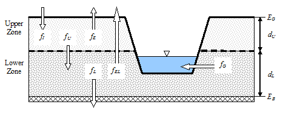

Shown below is a definitional sketch of the two-zone groundwater model that is used in SWMM. The upper zone is unsaturated with a variable moisture content of ?. The lower zone is fully saturated and therefore its moisture content is fixed at the soil porosity ϕ.

The fluxes shown in the figure, expressed as volume per unit area per unit time, consist of the following:
| fI | infiltration from the surface |
| fEU | evapotranspiration from the upper zone which is a fixed fraction of the unused surface evaporation |
| fU | percolation from the upper to lower zone which depends on the upper zone moisture content ? and depth dU |
| fEL | evapotranspiration from the lower zone, which is a function of the depth of the upper zone dU |
| fL | seepage from the lower zone to deep groundwater which depends on the lower zone depth dL |
| fG | lateral groundwater interflow to the conveyance network which depends on the lower zone depth dL as well as depths in the receiving channel or node. |
After computing the water fluxes that exist during a given time step, a mass balance is written for the change in water volume stored in each zone so that a new water table depth and unsaturated zone moisture content can be computed for the next time step.